客户端介绍
小小创造家客户端基于最新的Scratch3.0，支持10多种好玩、有趣的人工智能和物联网的软、硬件插件积木，通过轻松地组合创造，虚实互动，让儿童充分体验到创新教育的乐趣。
插件
包含米家智能家居、泥巴机器人、机器学习等10余种人工智能软、硬件积木插件。
智能家居
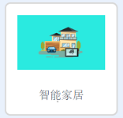
智能家居介绍
基于米家智能家居套件，让儿童充分体验空间编程。该插件基于dlna设备发现功能去获取自配置的小狮网关IP。
硬件说明
米家智能家居套装
包括米家智能网关、无线开关、人体红外、门窗传感器、智能插座几种智能家居常用的智能硬件设备。
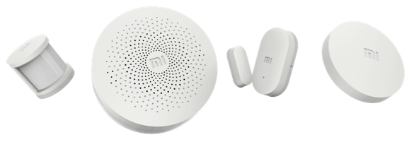
米家智能网关
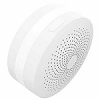
网关作用，用来自动检测网关下的所有设备并通信。
无线开关
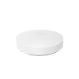
开关作用，按下即动作，松开释放。在教学场景中可以用来作为开关按键控制。
人体红外
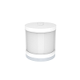
人体红外作用，用来探测是否有人经过。频率为一分钟探测一次。
门窗传感器
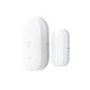
门窗传感器作用，用来感应门窗的打开和闭合。
智能插座
智能插座作用，用来将插入的识别智能化。
魔方控制器
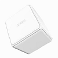
魔方控制器是一款基于动作感应的智能无线控制器，识别6种控制动作。分别是：
- 摇一摇
- 敲两下
- 翻转90°
- 翻转180°
- 平面旋转
- 推一推
这些动作单个使用或者组合起来使用，在教学场景中可以用来作为密码锁，或者开关使用。
dlna设备发现说明
dlna可自动发现局域网内的小狮网关信息,加载智能家居插件时，在弹框中显示所有扫描到的小狮网关信息。用户点击自己的小狮网关对应的IP即可与小狮网关建立连接。进行相应的智能硬件操作。
dlna扫描发现
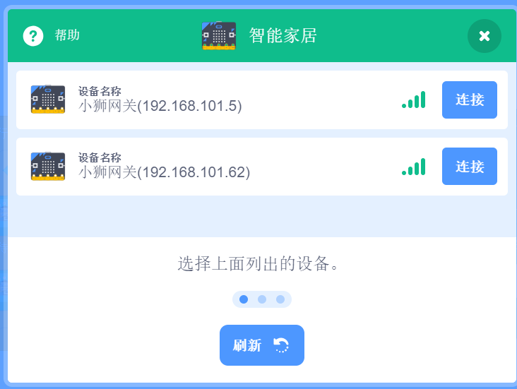
1. 操作灯积木
将通过局域网接入的智能灯打开或者关闭。
2. 设置灯颜色积木
将通过局域网接入的智能灯颜色设成指定的七种颜色。
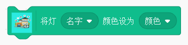
3. 设置灯颜色积木（rgb）
设置智能灯的闪烁跳动模式。
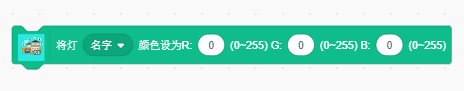
4. 无线开关积木
当指定的无线开关进行单击，双击等操作时，触发。
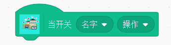
5. 人体红外探测积木
当指定的红外探测器探测到人体通过时触发。
注意：该模块受米家智能硬件条件限制，1分钟内只能触发一次。
6. 门窗传感器积木
当指定的门窗传感器打开或者闭合时，触发。
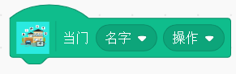
7. 魔方控制器积木
当指定的魔方进行翻转等相应操作时，触发。
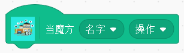
8. 百度音箱
使用百度音箱进行文字tts文字播报。
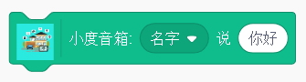
9. 判断魔方状态积木块
判断指定魔方最新状态和所选状态是否一致。
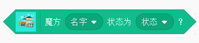
10. 判断开关状态积木块
判断指定开关最新状态和所选状态是否一致。
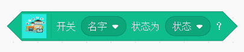
11. 判断门窗状态积木块
判断指定门窗最新状态和所选状态是否一致。
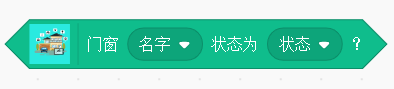
12. 判断人体传感器状态积木块
判断指定人体传感器最新状态和所选状态是否一致。
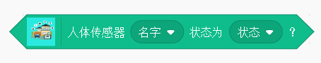
示例
当魔方进行摇一下操作时，会触发执行将灯打开，将灯的颜色设成红色，小度音箱播报，灯已打开，一秒之后，将灯关闭，左边积木块会检测魔方的状态，当魔方摇动时，小度音箱会说灯已打开，并将灯关闭。
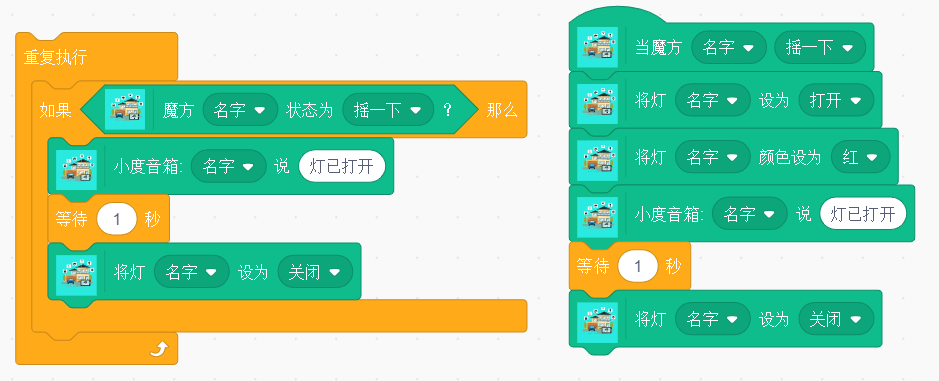
彩光LED灯泡
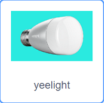
彩光LED灯泡介绍
彩光LED灯泡可以设计成各种模式和颜色。丰富家庭氛围。
1.扫描彩光LED灯泡积木块
扫描客户端所在局域网下的所有彩光LED灯泡。
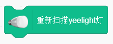
2.设置彩光LED灯泡颜色积木块
将彩光LED灯泡设置成不同的rgb颜色值。

3.设置彩光LED灯泡亮度积木块
将彩光LED灯泡设置成相应的亮度，取值为0~100。
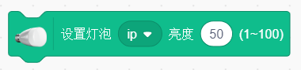
4.设置彩光LED灯泡色温积木块
将彩光LED灯泡设置成相应的色温，取值为1700~4500。
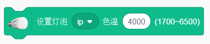
5.设置彩光LED灯泡律动模式积木块
将彩光LED灯泡设置成相应的亮度，取值为0~100。
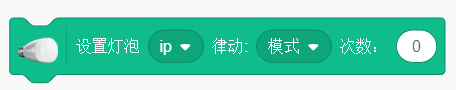
6.控制彩光LED灯泡开关积木块
将彩光LED灯泡打开或者关闭。
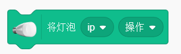
示例
首先扫描所有的彩光LED灯泡，选择其中的某个灯进行相应的打开，改变亮度，改变颜色，改变色温，关闭。
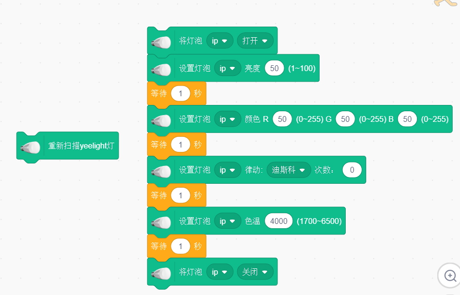
人脸识别
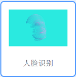
人脸识别介绍
包括人脸检测和人脸识别，该插件基于dlna设备发现功能去获取自配置的小狮网关IP。
人脸检测- 对有没有人脸，以及人脸基本特征进行检测- 基本特征包括：年龄、性别、微笑度
人脸识别- 对检测出来的人脸匹配是否是已知的某个人- 例如，匹配上是自己家人，或者不是自己家人
人脸添加- 将人脸添加到人脸库中- 例如，将姓名“张三”和对应的人脸截图添加到人脸库中
- 例如，将姓名“张三”和对应的人脸截图添加到人脸库中
dlna设备发现说明
dlna可自动发现局域网内的小狮网关信息,加载人脸识别插件时，在弹框中显示所有扫描到的小狮网关信息。用户点击自己的小狮网关对应的IP即可获得对应机构的人脸库，获得人脸库之后可进行人脸操作。
dlna扫描发现
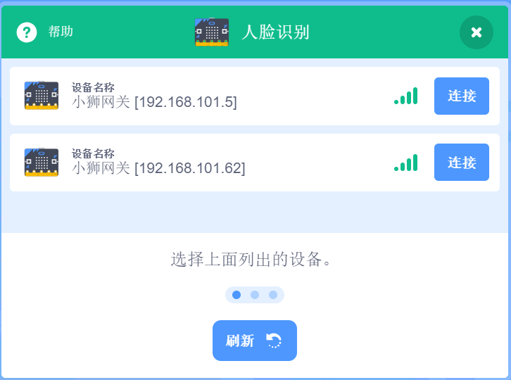
1. 打开IP相机积木
该积木块打开检测识别弹框窗口进行人脸识别和检测。
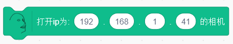
2. 打开IP相机添加人脸积木
该积木块打开人脸添加窗口，可进行添加人脸到人脸库操作。
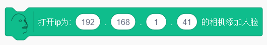
3. 开始人脸检测积木
使用手机的ipwebcamera摄像头对应的ip进行人脸探测，探测人脸的特征，检测人脸之前需要打开检测识别弹框窗口。
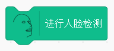
4. 当检测到人脸积木
当摄像头探测到人脸时，触发。
5. 人脸检测年龄积木
显示识别到的年龄。
6. 人脸检测性别积木
显示识别到的性别。
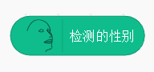
7. 人脸检测微笑度积木
显示识别的微笑度百分比结果。
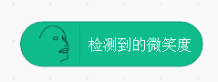
8. 开始人脸识别积木
使用手机的ipwebcamera摄像头对应的ip进行人脸识别，识别人脸姓名，识别人脸之前需要打开检测识别弹框窗口。
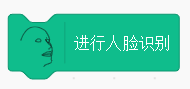
9. 当识别到人脸积木
当摄像头识别到人脸结果时，触发。
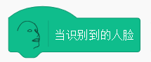
10. 人脸姓名积木
显示识别到的人脸对应姓名。
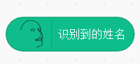
示例
使用手机摄像头开始检测人脸，当检测到人脸时，舞台角色说出已检测结果的年龄、性别和微笑度；当检测到是男性时，说出“这是一名男性”；并进行人脸识别，当人脸识别异步返回结果时，将识别的姓名说出。
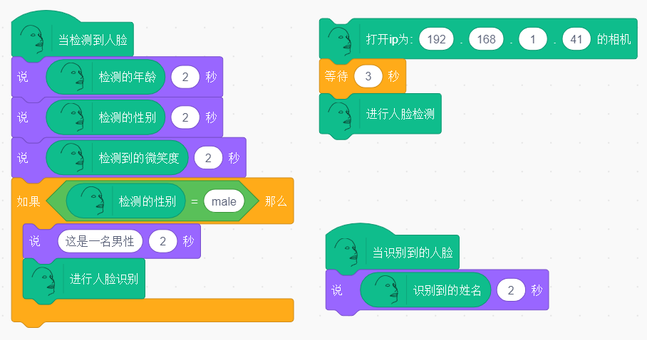
语音识别
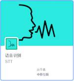
语音识别介绍
语音识别，文字播报。
1. 打开语音输入积木
通过电脑麦克风输入语音，点击输入语音，可以选择语音输入的时间，默认输入时间为5秒
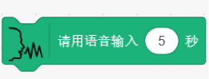
2. 当语音识别返回结果积木
当识别语音结束时执行
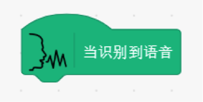
3. 当语音识别返回结果积木（含特定词语）
当识别到语音中包含给定词语时执行，默认包含“开始”
4. 语音识别结果积木
输出输入的语音结果。
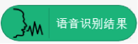
示例
点击小旗子，输入语音5秒，文字输出语音输入的结果。
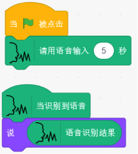
5. 选择人物声线积木
可以选择不同播报人物声线。
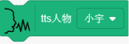
6. 讲话积木
将选框内文字以语音输出，通过电脑麦克风播报出来
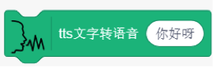
示例
点击小旗子，用小宇的声线说出“你好呀”。
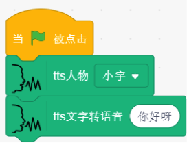
机器学习
机器学习介绍
简单而强大的机器学习模型，快速学习三种类别的分类，并进行识别。
- 图像
- 声音
- 骨骼（身体姿态）
1. 图像分类积木
打开图像分类窗口
示例
打开图像识别分类窗口，点击训练按钮，对不同分类进行训练，点击小旗子，说出分类一的信心值。例如，训练一个拳头，拳头的大部分角度训练达到100%，训练完成。
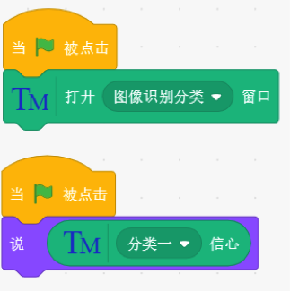
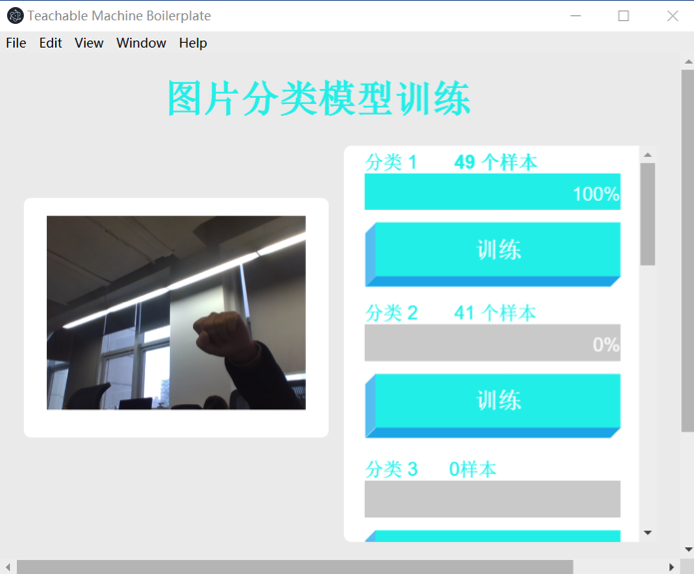
另外，训练手势识别开灯的编程示例如下。
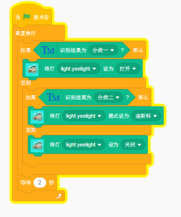
2. 身体姿态分类积木
打开身体姿态分类窗口
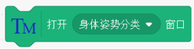
示例
打开身体姿势分类窗口，点击分类一训练按钮，训练到分类一信心值为100%， 训练完成。对其他分类进行相同的训练操作，点击小旗子，说出分类一的信心值。
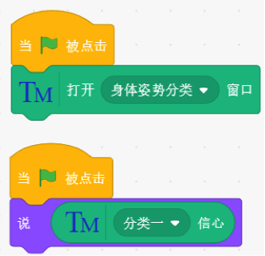
3. 声音分类积木
打开声音识别分类窗口
示例
打开声音识别分类窗口，其中训练分类1采集背景音，至少采集四次，采集完背景音后可以开始训练其他分类。
点击“开始转移学习”按钮，转移学习完成后，点击“开始”按钮。
点击小旗子，说出分类一的信心值。
4. 识别结果积木
返回识别结果分类。
示例
打开识别分类窗口，进行训练，说出识别结果。
5. 判断识别结果积木
判断识别结果是否为选区内分类。
示例
打开识别分类窗口，进行训练，判断识别结果是否是分类一，若是，则说“是分类一啊”。
数字转换
数字转换介绍
中文大写数字转数字，以及时间提取功能的插件。
1.大写转数字积木块
将中文大写数字转成阿拉伯数字，例如： ‘二十三’转成‘23’。
2.提取时间数字积木块
将输入字段中的时间关键字转成对应的时间格式 例如：‘三分钟后’转成‘2020-03-02 12:00:00’。
3.到达指定时间积木块
当时间达到指定时间格式时，执行，输入的变量应为时间格式,(使用时将提取数字时间积木块的值赋值给一个变量，将变量输入到该积木块中。)
示例
当棋子被点击时，会将大写数字一转成‘1’并说出，并将当前时间三分钟后的时间转成时间格式赋值给时间变量，当当前时间达到时间变量规定的时间时，触发积木块，播报‘时间到了’。
和风天气
和风天气介绍
获取你关心的城市的天气数据:
- 温度
- 湿度
- 天气状况
- 降水量
1. 读取今天天气
异步获取今天天气，可以在选框内，填入相应的地址。
2. 今天天气结果已读取
当获得今天天气结果返回。
3. 显示天气状态
获取温度，湿度，天气状况和降水量。
示例
点击小旗子，读取杭州今天天气，然后说出杭州今天温度。
4. 读取未来几天天气预报
可以在选框内，填入地址，并选择读取未来第几天的天气。
5. 未来几天天气结果已读取
当天气预报返回结果时。
示例
点击小旗子，获取杭州后天天气，然后说出温度。
认知能力
认知能力介绍
识别特定种类图像及对人体关键点定位。
手势识别
手势识别介绍
硬件说明
MQTT
MQTT介绍
一种物联网消息传输协议。
泥巴机器人
常见问题说明
Windows环境USB摄像头与本地电脑摄像头冲突，无法找到
如下图所示，为教学使用USB摄像头，具体型号以实际使用为准。
1.打开设备管理器
2.找到照相机
3.鼠标右键点击设备名称，然后选择“禁用设备”，然后关闭设备管理器。
4.将外界摄像头通过USB连接电脑，再使用摄像头的时候就可以愉快地使用USB摄像头了。
履带式小车
履带式小车介绍
包括小车行驶和小车传感器
小车行驶- 对小车的驾驶速度，驾驶时间以及小车的等进行控制- 基本特征包括：年龄、性别、有无眼镜
小车传感器- 包括了颜色传感器，角度传感器，速度传感器和环境光传感器
硬件说明
sphero rvr
积木块说明
1. 开始连接小车
填写IP地址连接小车。
2. 启动小车
设置小车的启动速度(0-255)以及一开始头朝向的角度(行车方向0-359)。
样例代码
填写积木块上的IP地址连接小车，设置小车启动速度为25，头朝向角度为0，点击小旗子运行。
3. 小车后退
设置小车的速度，角度和运行时长，让小车向后运动。
样例代码
填写积木块上的IP地址连接小车，设置小车启动速度为25，角度为45，运行时长为3秒，点击小旗子运行。
4. 小车前进
设置小车的速度，角度和运行时长，让小车向前运动。
样例代码
填写积木块上的IP地址连接小车，设置小车启动速度为25，角度为45，运行时长为3秒，点击小旗子运行。
5. 小车左转
设置小车的左转向，填入角度，控制小车向左转的角度。
样例代码
填写积木块上的IP地址连接小车，设置小车向左转角度为90，点击小旗子运行。
6. 小车右转
设置小车的右转向，填入角度，控制小车向右转的角度。
样例代码
填写积木块上的IP地址连接小车，设置小车向左转角度为90，点击小旗子运行。
7. 打开窗口
点击打开窗口按钮，可通过窗口的方向盘控制小车前进方向,还可以查看小车剩余电量。
样例代码
填写积木块上的IP地址连接小车，点击小旗子运行。
8. 刹车
可以让启动的小车停止行驶，同时可以设置刹车时小车的头朝向角度。
样例代码
填写积木块上的IP地址连接小车，设置小车向左转角度为90，点击小旗子运行。
9. 设置小车灯的颜色
设置左侧状态指示灯,右侧状态指示灯,头部左侧灯,头部右侧灯,电池门前灯,电池门后灯,电源按钮前灯,电源按钮后灯,刹车左灯,刹车右灯,电源按钮前灯,底盘白灯颜色。
样例代码
填写积木块上的IP地址连接小车，设置小车左侧状态指示灯颜色，点击小旗子运行。
10. 设置全部小车灯的颜色
通过填写RGB,设置所有灯的颜色。
样例代码
填写积木块上的IP地址连接小车，设置所有的颜色为255 255 0，点击小旗子运行。
11. 关闭小车的灯
点击积木块，关闭小车所有灯。
样例代码
填写积木块上的IP地址连接小车，拉取“关闭所有灯”积木块，点击小旗子运行。
12. 开启颜色传感器
点击积木块，开启颜色传感器。
13. 当颜色发生改变
点击积木块，在颜色发生改变时，返回改变的颜色。
14. 颜色的RGB值
点击积木块，获取当前返回颜色的RGB值。
样例代码
填写积木块上的IP地址连接小车，拉取“开启颜色检测”积木块，点击小旗子运行。点击“当颜色发生改变时”积木块，移动小车，让小车底部的颜色发生改变。点击“说”积木块。
15. 颜色的RGB值
点击积木块，获取当前颜色的RGB值。
16. 关闭颜色传感器
点击积木块，关闭颜色传感器。
样例代码
填写积木块上的IP地址连接小车，拉取“开启颜色检测”积木块，点击小旗子运行。拉取“获取当前颜色RGB”积木块和“颜色传感器的值”积木块，点击小旗子运行。移动小车，让小车底部的颜色发生改变。点击“说”积木块。
17. 开启传感器
点击积木块，开启传感器。
18. 角度传感器
点击积木块，获取角度传感器(pitch,roll,yaw)的值。
19. 速度传感器
点击积木块，获取速度传感器(MPS)的值。
20. 环境光传感器
点击积木块，获取环境光传感器(light)的值。
21. 关闭传感器
点击积木块，关闭传感器。
样例代码
填写积木块上的IP地址连接小车，拉取“开启传感器”积木块。同时每隔1秒，说出“角度传感器”积木块，“速度传感器”积木块和“环境光传感器”积木块的值，点击小旗子运行。关闭传感器。
手势姿态跟踪
手势姿态跟踪介绍
手势姿态跟踪包括对手，手指，手势的跟踪和识别
硬件说明
体感控制器
使用包装盒中随附的USB电缆。控制器的光亮面朝上，绿灯面向您。下载所需的核心软件。
积木块说明
1. 手的位置
点击积木块，获得左手(右手)的X(Y和Z)的位置。
样例代码
将积木块放入重复执行积木块，点击小旗子运行。舞台的小狮子会不停的“说”右手的X位置。

2. 手旋转角度
点击积木块，获得左手(右手)的旋转角度。
样例代码
将积木块放入重复执行积木块，点击小旗子运行。舞台的小狮子会不停的“说”右手的旋转角度。

3. 手腕上下摆动角度
点击积木块，获得左手(右手)的手腕的上下摆动角度，朝上角度为正，朝下角度为负。
样例代码
将积木块放入重复执行积木块，点击小旗子运行。舞台的小狮子会不停的“说”右手手腕摆动的角度。
4. 手腕上下摆动角度
点击积木块，获得左手(右手)的食指(拇指，中指，无名指，小拇指)的X(Y,Z)的位置。
样例代码
将积木块放入重复执行积木块，点击小旗子运行。舞台的小狮子会不停的“说”右手食指X的位置。
5. 判断手势
点击积木块，当识别到指定手势(挥手，手指画圆，点击屏幕，点击键盘)时，返回。
样例代码
当识别出挥手的手势时，舞台的小狮子会说“你好”。